Programación
Tema 9: Conexión a Bases de Datos
Índice
- Introducción
- Drivers
- API JDBC
- Base de Datos con Docker
- Resumen SQL
- Patrón DAO
Introducción
Los lenguajes de programación y las bases de datos se relacionan mediante APIs. Nosotros vamos a trabajar con la API JDBC (Java DataBase Connectivity) para acceder desde Java a MySQL. Nos va a permitir ejecutar sentencias SQL desde Java de forma sencilla.
Introducción
Desfase objeto-relacional
Consiste en las diferencias entre la POO y las bases de datos relacionales:
- Lenguaje de programación (Java) distinto del de acceso a datos (SQL).
- Tipos de datos complejos en POO y sencillos en BBDD.
- En la fase de diseño se tendrán diagramas de clases (manejan clases y objetos) y diagramas ER (maneja tablas y registros)
Introducción
Desfase objeto-relacional
El modelo relacional trata con relaciones y conjuntos debido a su naturaleza matemática. El modelo de POO trata con objetos y las asociaciones entre ellos.
Las dificultades técnicas surgen cuando una base de datos relacional se usa en conjunto con un programa escrito con lenguajes de POO.
Introducción
Desfase objeto-relacional
La principal dificultad reside en manejar nuestras clases y pasarlas a SQL.
Ejemplo: Un equipo de fútbol, tiene como atributo una colección de jugadores y dentro de cada jugador existe un número de teléfono. Este ejemplo se maneja “fácil” en POO pero su paso a SQL es complicado, necesita muchas líneas de código y muchas sentencias SQL.
Introducción
Desfase objeto-relacional
Solución: ORM (Object Relational Mapping). Mapean de forma automática nuestros objetos a tablas SQL y viceversa. Algunos ORMs: Hibernate, ObjectDB, TopLink, CocoBase, OpenJPA...
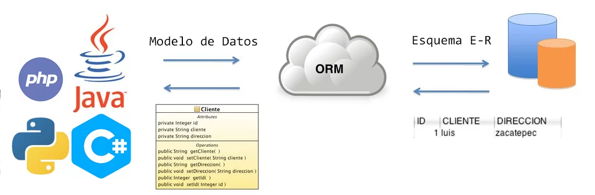
Índice
- Introducción
- Drivers
- API JDBC
- Base de Datos con Docker
- Resumen SQL
- Patrón DAO
Drivers
Un conector o driver es un conjunto de clases encargadas de implementar las interfaces del API utilizado para acceder a la base de datos.
En nuestro caso, un fichero .jar que contiene una implementación de todas las interfaces del API JDBC que conectará con MySQL.
Drivers
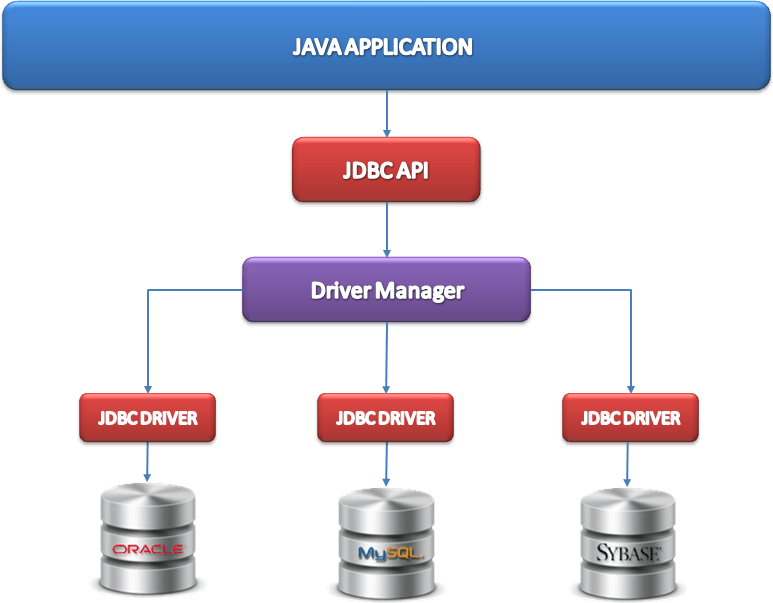
Drivers
Puedes descargar el driver o conector JDBC para MySQL desde aquí. Selecciona la opción de "Independiente de la plataforma" y descarga el ZIP.
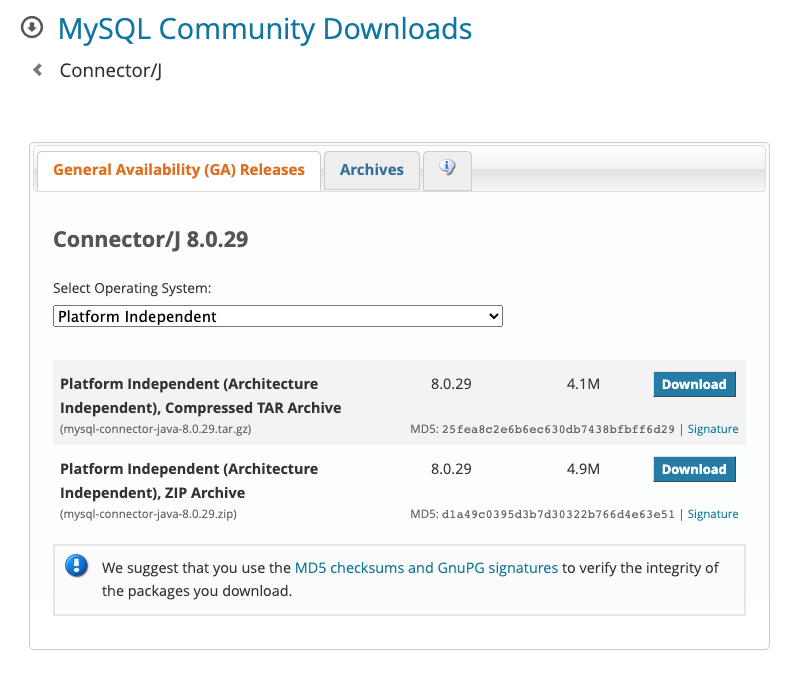
Drivers
Una vez descargado, descomprime el ZIP y añade el .jar al proyecto desde "Project structure > Modules > Dependencies > + > JAR or directories".
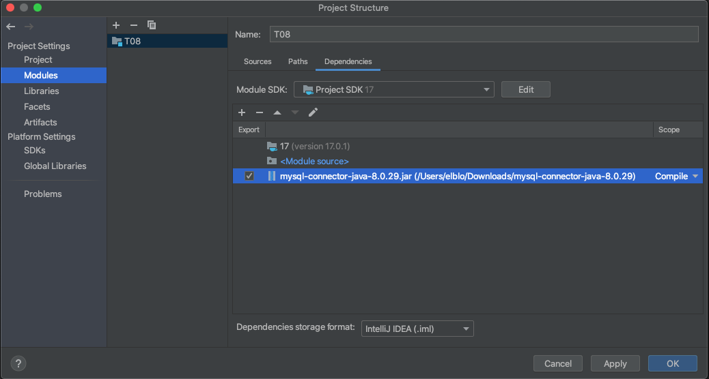
Índice
- Introducción
- Drivers
- API JDBC
- Base de Datos con Docker
- Resumen SQL
- Patrón DAO
API JDBC
JDBC es el API de Java para ejecutar sentencias SQL.
Se basa en la simplicidad, la abstracción, ocultar al usuario toda la información posible sobre el acceso a la capa de datos y que pueda programar las operaciones de lectura/escritura trabajando con clases de Java.
API JDBC
JDBC proporciona las clases e interfaces para:
- Establecer una conexión a una base de datos.
- Ejecutar una sentencia o consulta SQL.
- Procesar los resultados.
API JDBC
Establecer conexión con la BDD
// Cargar el driver de MySQL
Class.forName("com.mysql.cj.jdbc.Driver");
// Establecer servidor, puerto, BDD y usuario
String url = "jdbc:mysql://localhost:3306/pruebabdd";
String user = "root";
String password = "";
// Establecer la conexión a la base de datos
Connection conn = DriverManager.getConnection(url, user, password);
API JDBC
Ejecutar sentencias
Mediante executeUpdate se ejecutan sentencias INSERT, UPDATE y DELETE, devolviendo el número de filas afectadas con la sentencia.
// Crear y ejecutar la sentencia
Statement stmt = conn.createStatement();
String sql = "INSERT INTO usuarios (nombre, edad) VALUES ('Juan López', 25)";
int rows = stmt.executeUpdate(sql);
System.out.println("Filas insertadas: " + rows);
// Cerrar la sentencia
stmt.close();
API JDBC
Ejecutar consultas
Mediante executeQuery se ejecutan consultas, devolviendo los datos en un objeto ResulSet.
// Crear y ejecutar una consulta
stmt = conn.createStatement();
String sql = "SELECT * FROM usuarios";
ResultSet rs = stmt.executeQuery(sql);
// Procesar los resultados de la consulta
while (rs.next()) {
int id = rs.getInt("id");
String nombre = rs.getString("nombre");
int edad = rs.getInt("edad");
System.out.println("ID: " + id + ", Usuario: " + nombre + ", " + edad + " años.");
}
// Cerrar la sentencia
stmt.close();
API JDBC
Ejemplo - Crear BDD y tabla
Crear base de datos pruebabdd con la tabla usuarios con la siguiente estructura:
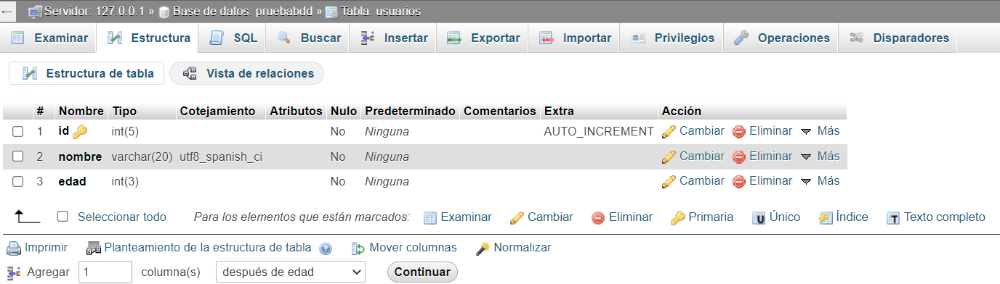
API JDBC
Ejemplo - Insert, Update y Delete
import java.sql.*;
/*
* En este ejemplo, se utilizan los métodos executeUpdate() del objeto Statement para realizar las operaciones INSERT, UPDATE y DELETE.
* El método executeUpdate() devuelve el número de filas afectadas por la operación.
* Se utiliza la variable filasInsertadas, filasActualizadas y filasEliminadas para mostrar el número de filas afectadas por cada operación.
* También se utiliza un bloque finally para cerrar la conexión y liberar los recursos después de ejecutar las operaciones.
* */
public class EjemploOperacionesBD {
public static void main(String[] args) {
// Definir variables de conexión
Connection conn = null;
Statement stmt = null;
try {
// Cargar el driver de MySQL
Class.forName("com.mysql.cj.jdbc.Driver");
// Establecer la conexión a la base de datos
String url = "jdbc:mysql://localhost:3306/pruebabdd";
String user = "root";
String password = "";
conn = DriverManager.getConnection(url, user, password);
// INSERT
stmt = conn.createStatement();
String insert = "INSERT INTO usuarios (nombre, edad) VALUES ('Juan López', 25)";
int filasInsertadas = stmt.executeUpdate(insert);
System.out.println("Filas insertadas: " + filasInsertadas);
// UPDATE
String update = "UPDATE usuarios SET edad = 26 WHERE nombre = 'Juan'";
int filasActualizadas = stmt.executeUpdate(update);
System.out.println("Filas actualizadas: " + filasActualizadas);
// DELETE
String delete = "DELETE FROM usuarios WHERE edad > 30";
int filasEliminadas = stmt.executeUpdate(delete);
System.out.println("Filas eliminadas: " + filasEliminadas);
} catch (SQLException e) {
e.printStackTrace();
} catch (Exception e) {
e.printStackTrace();
} finally {
// Cerrar la conexión y liberar recursos
try {
if(stmt != null) stmt.close();
} catch (SQLException e) {
e.printStackTrace();
}
try {
if(conn != null) conn.close();
} catch (SQLException e) {
e.printStackTrace();
}
}
}
}
API JDBC
Ejemplo - Select
import java.sql.*;
/*
* En este ejemplo, se utiliza el método DriverManager.getConnection() para establecer la conexión a la base de datos MySQL.
* Luego, se ejecuta una consulta utilizando un objeto Statement y se procesan los resultados utilizando un objeto ResultSet.
* Finalmente, se cierra la conexión y se liberan los recursos utilizando el bloque finally.
* */
public class EjemploConexionMySQL {
public static void main(String[] args) {
// Definir variables de conexión
Connection conn = null;
Statement stmt = null;
try {
// Cargar el driver de MySQL
Class.forName("com.mysql.cj.jdbc.Driver");
// Establecer la conexión a la base de datos
String url = "jdbc:mysql://localhost:3306/pruebabdd";
String user = "root";
String password = "";
conn = DriverManager.getConnection(url, user, password);
// Ejecutar una consulta
stmt = conn.createStatement();
String consulta = "SELECT * FROM usuarios";
ResultSet rs = stmt.executeQuery(consulta);
// Procesar los resultados de la consulta
while (rs.next()) {
int id = rs.getInt("id");
String nombre = rs.getString("nombre");
int edad = rs.getInt("edad");
System.out.println("ID: " + id + ", Usuario: " + nombre + ", " + edad + " años.");
}
} catch (SQLException e) {
e.printStackTrace();
} catch (Exception e) {
e.printStackTrace();
} finally {
// Cerrar la conexión y liberar recursos
try {
if(stmt != null) stmt.close();
} catch (SQLException e) {
e.printStackTrace();
}
try {
if(conn != null) conn.close();
} catch (SQLException e) {
e.printStackTrace();
}
}
}
}
API JDBC
Ejercicios del 1 al 4
Índice
- Introducción
- Drivers
- API JDBC
- Base de Datos con Docker
- Resumen SQL
- Patrón DAO
Base de Datos con Docker
Docker es una solución de virtualización ligera para correr contenedores Linux de manera muy eficiente. Se puede usar en equipos de escritorio y también desplegar en nubes como Azure, AWS...
A partir de un anfitrión Linux es capaz de desplegar máquinas que comparten procesos e hilos de la máquina anfitriona.
Base de Datos con Docker
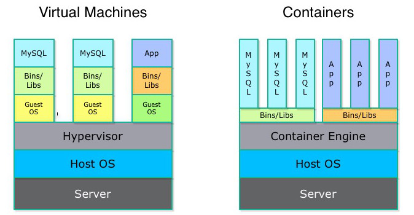
Base de Datos con Docker
En Windows, a diferencia de Linux y Mac, la instalación y ejecución no es trivial porque no hay un kernel Linux funcionando en el sistema.
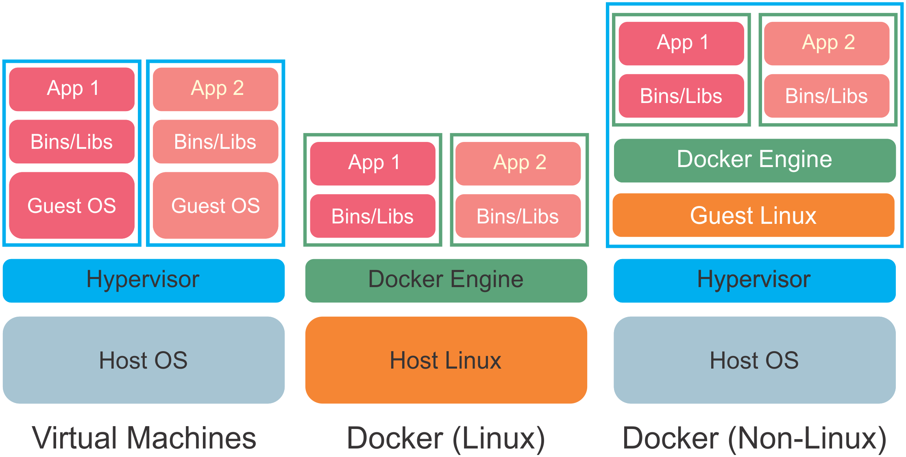
Base de Datos con Docker

Base de Datos con Docker
Vamos a desplegar y asociar 2 contenedores, uno con el SGBD MySQL y otro con phpmyadmin, para facilitar la interacción y visualización de los datos.
En primer lugar, instala Docker. Si lo instalas en Windows, echa un ojo aquí o aquí.
Base de Datos con Docker
Una vez instalado Docker, acceder a la terminal para trabajar mediante comandos, o mediante interfaz gráfica con Docker Desktop.
Nosotros trabajaremos desde la terminal.
Base de Datos con Docker

Base de Datos con Docker
Descargar las imágenes de MySQL y phpmyadmin.
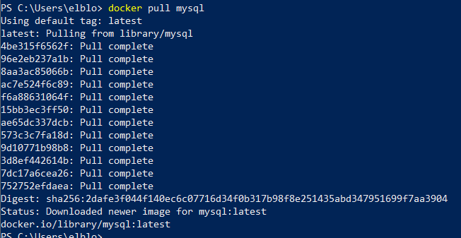
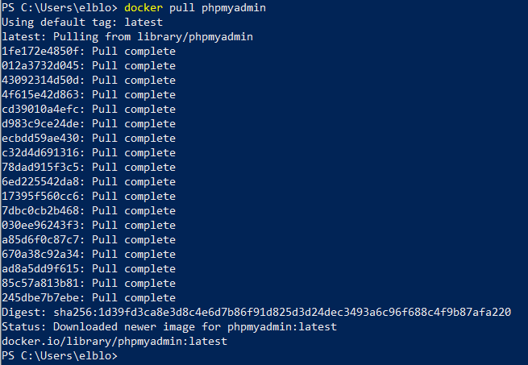
Base de Datos con Docker
Comprobar las imágenes descargadas.
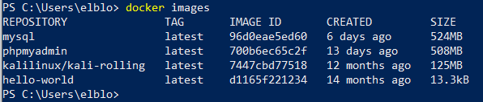
Base de Datos con Docker
Crear los contenedores a partir de las imágenes descargadas.
- -d o --detach para ejecutar un contenedor en background (normalmente porque tenga un servicio).
- -p o --publish para conectar puertos del contenedor con los de nuestro host.
- --name para darle nombre al contenedor.
- -e o --env para establecer variables de entorno en la ejecución del contenedor.
- -v o --volume para montar un bind mount o un volumen en nuestro contenedor.
- --restart que permite reiniciar un contenedor si este se "cae" por cualquier motivo.
- --link, en la cual vamos a especificar el nombre del contenedor que va a tener la base de datos. En desuso, mejor utilizar Redes Docker para asociar contenedores.
Base de Datos con Docker
Crear los contenedores a partir de las imágenes descargadas.
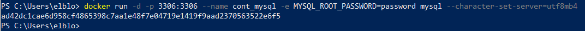
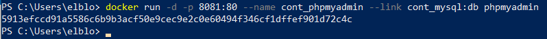
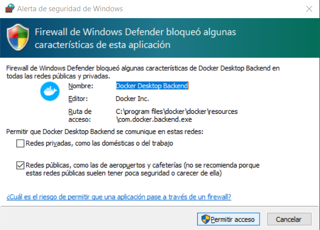
Base de Datos con Docker
Comprobar estado de los contenedores creados.
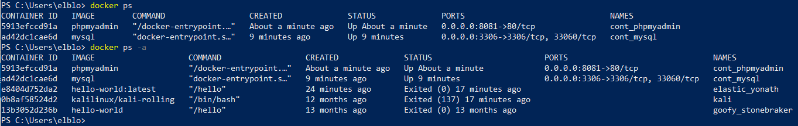
Base de Datos con Docker
Acceder a phpmyadmin (root | password).
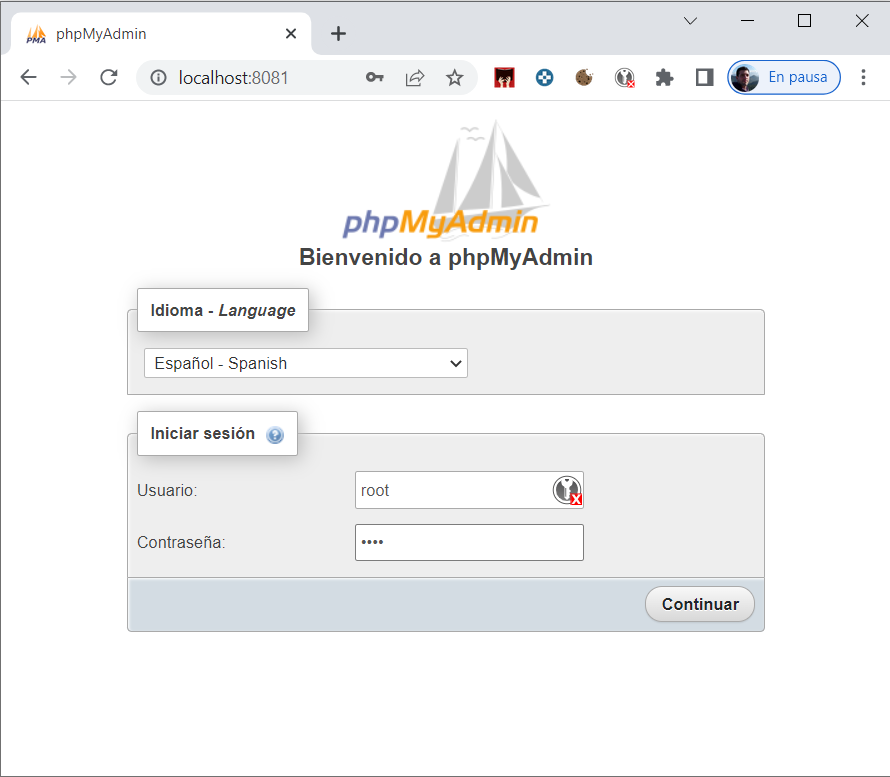
Base de Datos con Docker
Acceder a phpmyadmin (root | password).
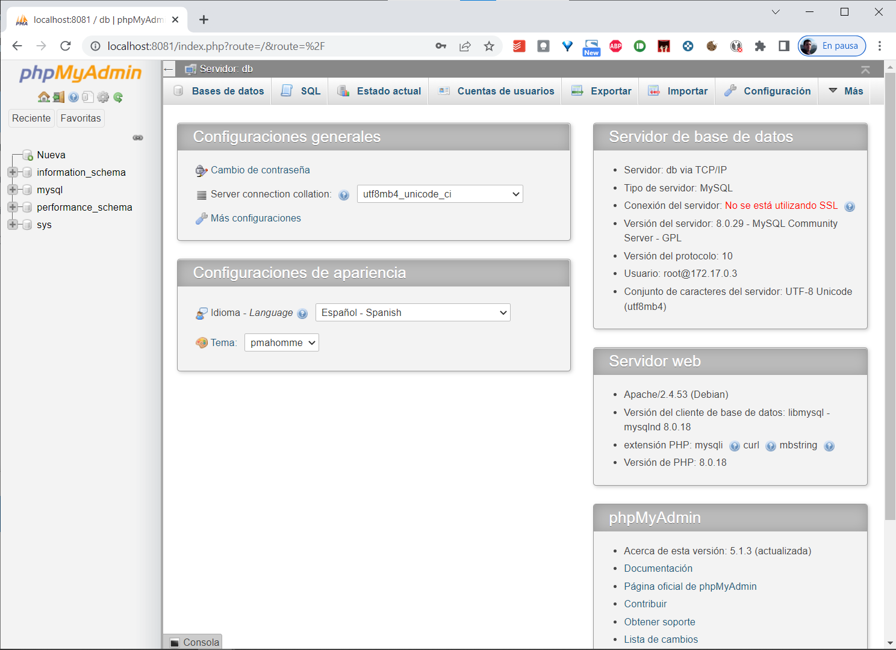
Base de Datos con Docker
Ejecutar comandos en un contenedor.
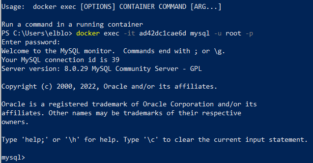
Base de Datos con Docker
Parar la ejecución de los contenedores.
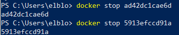
Base de Datos con Docker
Ejecutar los contenedores (creados previamente).
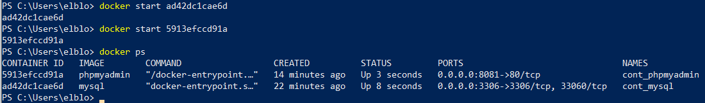
Base de Datos con Docker
Gestión desde Docker Desktop.
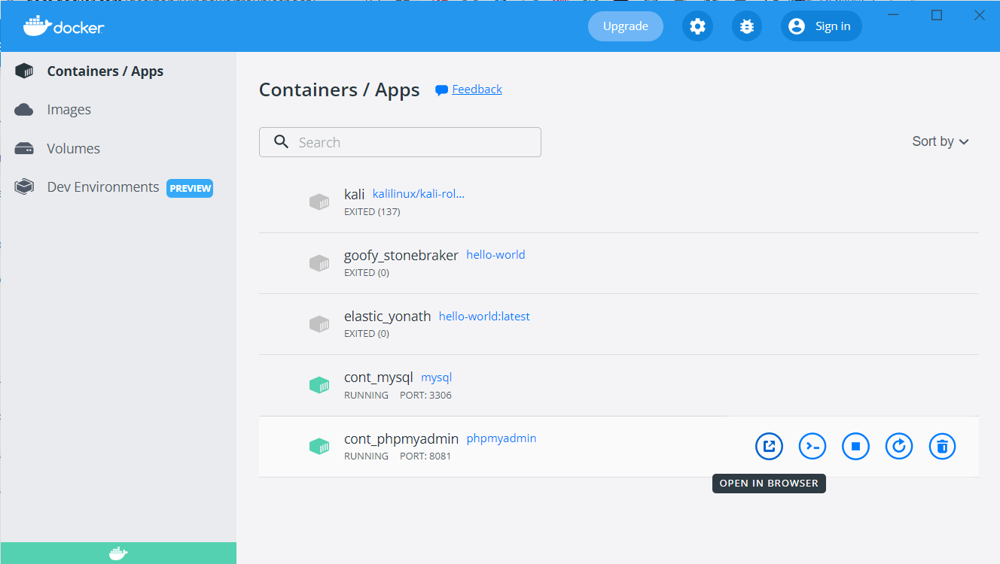
Índice
- Introducción
- Drivers
- API JDBC
- Base de Datos con Docker
- Resumen SQL
- Patrón DAO
Resumen SQL
Chuleta DDL | Chuleta consultas
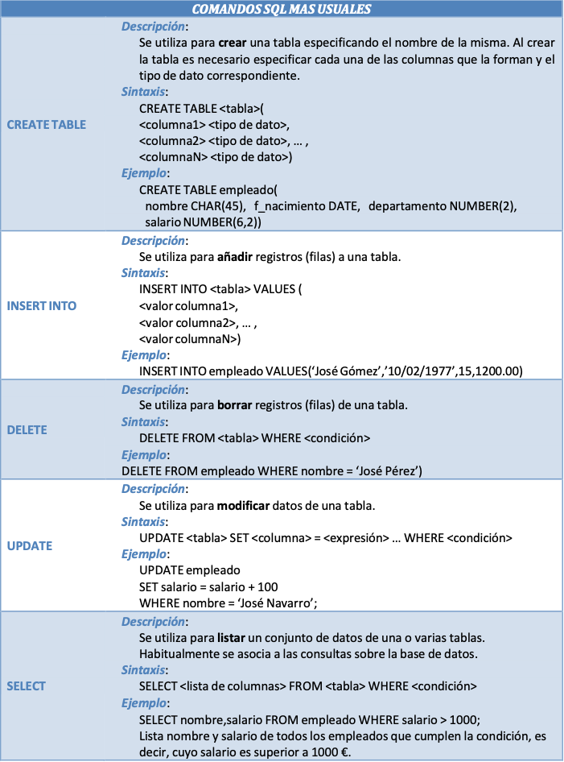
Índice
- Introducción
- Drivers
- API JDBC
- Base de Datos con Docker
- Resumen SQL
- Patrón DAO
Patrón DAO
El patrón Data Access Object (DAO) pretende independizar la aplicación de la forma de acceder a la base de datos.
Fuera de las clases DAO no debe haber código que acceda al repositorio de datos.
Patrón DAO
Ventajas
- Separar el modelo de negocio del de acceso a datos.
- Tener un código limpio de la aplicación sin mezclar con SQL.
- Posibilidad de cambiar de BD con la misma lógica de negocio.
Patrón DAO

Patrón DAO
Clases que utilizaremos
- Manager de la conexión.
- Interfaces con operaciones.
- DAOs de nuestras clases con la implementación de su correspondiente interfaz.
Patrón DAO
No olvidar añadir al proyecto el driver/conector de JDBC para MySQL.
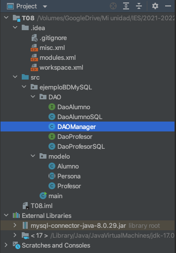
Patrón DAO
Antes de comenzar, crear las tablas alumnos y profesores en el contenedor de phpmyadmin. Vamos a relacionarlas con las clases Alumno y Profesor del tema anterior.
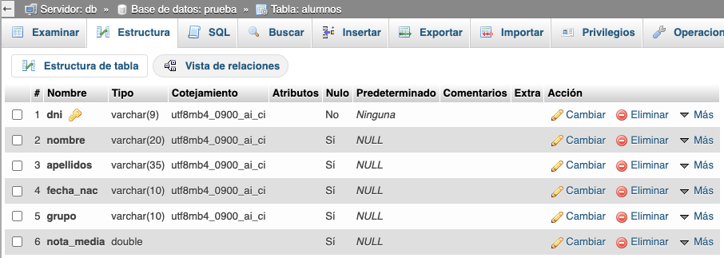
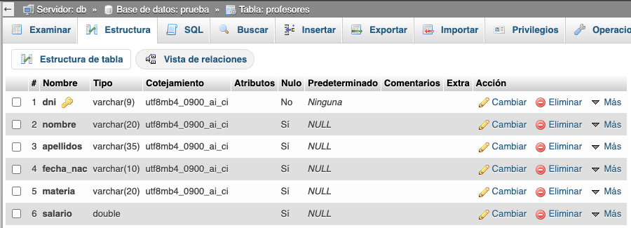
Patrón DAO
1. DAO Manager
Clase singleton (sólo podrá instanciar 1 objeto) que gestiona la conexión (abrirla y cerrarla) con la BD y a la que enviaremos las sentencias SQL.
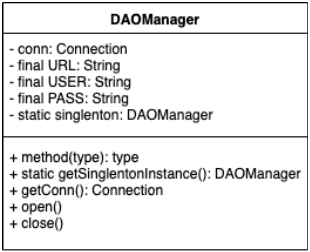
Patrón DAO
1. DAO Manager
public class DAOManager {
// Atributos
private Connection conn;
private final String URL;
private final String USER;
private final String PASS;
private static DAOManager singlenton; // Atributo estatico que guarda una referencia al DAO
// Constructor PRIVADO para que no se pueda utilizar desde el exterior
private DAOManager() {
this.conn = null;
this.URL = "jdbc:mysql://127.0.0.1:3306/prueba"; // Dirección del servidor y de BD a usar
this.USER = "root"; // Usuario de la BBDD
this.PASS = "password"; // Clave de la BBDD
}
// "Constructor" PÚBLICO. Comprueba si el atributo singlenton ya tiene valor.
// Si no lo tiene, crea la conexión y el objeto.
// Si lo tiene, devuelve null para que no se creen más objetos de la clase DAOManager.
public static DAOManager getSinglentonInstance(){
if (singlenton == null) {
singlenton = new DAOManager();
return singlenton;
}else return null;
}
// Abre la conexión con BD y la guarda en conn
public void open() throws Exception {
Class.forName("com.mysql.cj.jdbc.Driver"); //Cargo el driver de conexión JDBC
conn = DriverManager.getConnection(URL, USER, PASS); //Uso la clase DriverManager para crear la conexión
}
// Devuelve la conexión con la BD
public Connection getConn() {
return conn;
}
// Cierra la conexión con BD
public void close() throws Exception {
if(conn!=null) conn.close();
}
}
Patrón DAO
1. DAO Manager
// Ejemplo de uso en el main
DAOManager dao = DAOManager.getSinglentonInstance();
DAOManager dao2 = DAOManager.getSinglentonInstance();
if (dao2 == null) System.out.println("El singlenton funciona");
try{
dao.open();
System.out.println("Conexión establecida");
}catch (Exception e){
System.out.println("Error de conexión en la BBDD");
}
Patrón DAO
2. Interfaces de operaciones
- No es obligatorio, aunque sí buena práctica.
- Desarrollar interfaces sobre nuestras clases con las operaciones CRUD y otras que pudiéramos necesitar.
- Así, si se cambia de SGBD, sólo tendríamos que implementar la interfaz sobre el DAO del nuevo SGBD. De esta forma, no se nos olvidaría implementar ninguno de los métodos necesarios.
Patrón DAO
2. Interfaces de operaciones
package ejemploBDMySQL.DAO;
import ejemploBDMySQL.modelo.Alumno;
// Interfaz operaciones Alumno
public interface DaoAlumno {
public boolean insert(Alumno alumno, DAOManager dao);
public boolean update(Alumno alumno, DAOManager dao);
public boolean delete(Alumno alumno, DAOManager dao);
public Alumno read(String dni, DAOManager dao);
}
Patrón DAO
2. Interfaces de operaciones
package ejemploBDMySQL.DAO;
import ejemploBDMySQL.modelo.Profesor;
// Interfaz operaciones Profesor
public interface DaoProfesor {
public boolean insert(Profesor profesor, DAOManager dao);
public boolean update(Profesor profesor, DAOManager dao);
public boolean delete(Profesor profesor, DAOManager dao);
public Profesor read(String dni, DAOManager dao);
}
Patrón DAO
3. DAOs de nuestras clases
// DAO Alumno
public class DaoAlumnoSQL implements DaoAlumno {
// Ejemplo de refactorización
// TODO hacer igual en DaoProfesorSQL
// Método para lanzar sentencias INSERT, UPDATE y DELETE
public boolean ejecutaSentencia(String sentencia, DAOManager dao){
System.out.println("sentencia = " + sentencia);
try {
Statement stmt = dao.getConn().createStatement();
stmt.executeUpdate(sentencia);
return true;
} catch (SQLException ex) {
return false;
}
}
@Override
public boolean insert(Alumno alumno, DAOManager dao) {
String sentencia = "INSERT INTO alumnos VALUES ('"
+ alumno.getDni() + "','"
+ alumno.getNombre() + "','"
+ alumno.getApellidos() + "','"
+ alumno.getFechaNacim().format(DateTimeFormatter.ofPattern("dd/MM/yyyy")) + "','"
+ alumno.getGrupo() + "',"
+ alumno.getNotaMedia() + ");";
boolean resultado = ejecutaSentencia(sentencia, dao);
return resultado;
}
@Override
public boolean update(Alumno alumno, DAOManager dao) {
String sentencia = "UPDATE alumnos SET nombre = '"
+ alumno.getNombre() + "', apellidos = '"
+ alumno.getApellidos() + "', fecha_nac = '"
+ alumno.getFechaNacim().format(DateTimeFormatter.ofPattern("dd/MM/yyyy")) + "', grupo = '"
+ alumno.getGrupo() + "', nota_media = "
+ alumno.getNotaMedia() +
" WHERE dni = '" + alumno.getDni() + "';";
boolean resultado = ejecutaSentencia(sentencia, dao);
return resultado;
}
@Override
public boolean delete(Alumno alumno, DAOManager dao) {
String sentencia = "DELETE FROM alumnos WHERE dni = '" + alumno.getDni() + "';";
boolean resultado = ejecutaSentencia(sentencia, dao);
return resultado;
}
@Override
public Alumno read(String dni, DAOManager dao) {
Alumno alumno = null;
String sentencia = "SELECT * FROM alumnos WHERE dni = ?";
try {
PreparedStatement ps = dao.getConn().prepareStatement(sentencia);
ps.setString(1, dni);
System.out.println("sentencia = " + sentencia);
try (ResultSet rs = ps.executeQuery()) {
if (rs.next()) {
LocalDate cal2 = LocalDate.parse(rs.getString("fecha_nac"), DateTimeFormatter.ofPattern("dd/MM/yyyy"));
// obtener cada una de la columnas y mapearlas a la clase Alumno
alumno = new Alumno(dni,
rs.getString("nombre"),
rs.getString("apellidos"),
cal2,
rs.getString("grupo"),
rs.getDouble("nota_media"));
}
}
} catch (SQLException e) {
e.printStackTrace();
}
return alumno;
}
// Método que lee todos los alumnos y los devuelve en un ArrayList
public ArrayList<Alumno> readAll(DAOManager dao) {
ArrayList<Alumno> alumnos = new ArrayList<>();
String sentencia = "SELECT * FROM alumnos";
try {
PreparedStatement ps = dao.getConn().prepareStatement(sentencia);
//ps.setString(1, dni);
System.out.println("sentencia = " + sentencia);
try (ResultSet rs = ps.executeQuery()) {
while(rs.next()) {
//Calendar cal = Calendar.getInstance();
LocalDate cal2 = LocalDate.parse(rs.getString("fecha_nac"), DateTimeFormatter.ofPattern("dd/MM/yyyy"));
// Añadir el alumno al ArrayList
alumnos.add(new Alumno(rs.getString("dni"),
rs.getString("nombre"),
rs.getString("apellidos"),
cal2,
rs.getString("grupo"),
rs.getDouble("nota_media")));
}
}
} catch (SQLException e) {
e.printStackTrace();
}
return alumnos;
}
}
Patrón DAO
3. DAOs de nuestras clases
// DAO Profesor
public class DaoProfesorSQL implements DaoProfesor {
@Override
public boolean insert(Profesor profesor, DAOManager dao) {
String sentencia = "INSERT INTO profesores VALUES ('"
+ profesor.getDni() + "','"
+ profesor.getNombre() + "','"
+ profesor.getApellidos() + "','"
+ profesor.getFechaNacim().format(DateTimeFormatter.ofPattern("dd/MM/yyyy")) + "','"
+ profesor.getMateria() + "',"
+ profesor.getSalario()+ ");";
System.out.println("sentencia = " + sentencia);
try (Statement stmt = dao.getConn().createStatement()) {
stmt.executeUpdate(sentencia);
return true;
} catch (SQLException ex) {
return false;
}
}
@Override
public boolean update(Profesor profesor, DAOManager dao) {
String sentencia = "UPDATE profesores SET nombre = '"
+ profesor.getNombre() + "', apellidos = '"
+ profesor.getApellidos() + "', fecha_nac = '"
+ profesor.getFechaNacim().format(DateTimeFormatter.ofPattern("dd/MM/yyyy")) + "', materia = '"
+ profesor.getMateria() + "', salario = "
+ profesor.getSalario() +
" WHERE dni = '" + profesor.getDni() + "';";
System.out.println("sentencia = " + sentencia);
try (Statement stmt = dao.getConn().createStatement()) {
stmt.executeUpdate(sentencia);
return true;
} catch (SQLException ex) {
ex.printStackTrace();
return false;
}
}
@Override
public boolean delete(Profesor profesor, DAOManager dao) {
String sentencia = "delete from profesores where dni = '" + profesor.getDni() + "';";
System.out.println("sentencia = " + sentencia);
try (Statement stmt = dao.getConn().createStatement()) {
stmt.executeUpdate(sentencia);
return true;
} catch (SQLException ex) {
return false;
}
}
@Override
public Profesor read(String dni, DAOManager dao) {
Profesor profesor = null;
String sentencia = "SELECT * FROM profesores WHERE dni = ?";
try {
PreparedStatement ps = dao.getConn().prepareStatement(sentencia);
ps.setString(1, dni);
System.out.println("sentencia = " + sentencia);
try (ResultSet rs = ps.executeQuery()) {
if (rs.next()) {
LocalDate cal2 = LocalDate.parse(rs.getString("fecha_nac"), DateTimeFormatter.ofPattern("dd/MM/yyyy"));
// obtener cada una de la columnas y mapearlas a la clase Alumno
profesor = new Profesor(dni,
rs.getString("nombre"),
rs.getString("apellidos"),
cal2,
rs.getString("materia"),
rs.getDouble("salario"));
}
}
} catch (SQLException e) {
e.printStackTrace();
}
return profesor;
}
// Método que lee todos los profesores con los apellidos indicados y los devuelve en un ArrayList
public ArrayList<Profesor> readProfesoresByApellidos(String apellidos, DAOManager dao) {
ArrayList<Profesor> profesores = new ArrayList<>();
String sentencia = "SELECT * FROM profesores WHERE apellidos = ?";
try {
PreparedStatement ps = dao.getConn().prepareStatement(sentencia);
ps.setString(1, apellidos);
System.out.println("sentencia = " + sentencia);
try (ResultSet rs = ps.executeQuery()) {
while(rs.next()) {
LocalDate cal2 = LocalDate.parse(rs.getString("fecha_nac"), DateTimeFormatter.ofPattern("dd/MM/yyyy"));
// Añadir el profesor al ArrayList
profesores.add(new Profesor(rs.getString("dni"),
rs.getString("nombre"),
rs.getString("apellidos"),
cal2,
rs.getString("materia"),
rs.getDouble("salario"))
);
}
}
} catch (SQLException e) {
e.printStackTrace();
}
return profesores;
}
}
Patrón DAO
- Descarga el ejemplo completo aquí.
- Implementa el método update del DAO Profesor
- Implementa los siguientes métodos en los DAOs Profesor y Alumno
public ArrayList<Alumno> readAll(DAOManager dao);
public ArrayList<Alumno> readAlumnosByApellidos(String apellidos, DAOManager dao);
public ArrayList<Profesor> readAll(DAOManager dao);
public ArrayList<Profesor> readProfesoresByApellidos(String apellidos, DAOManager dao);
Patrón DAO
Ejercicios hasta el final

Repasar
Tips de la presentación
¿Imprimir en PDF?
- Clic aquí
- CTRL/CMD + P
- Guardar como PDF
Navegar por las diapositivas
- Pulsa ESC
- Clic a la que quieras ir